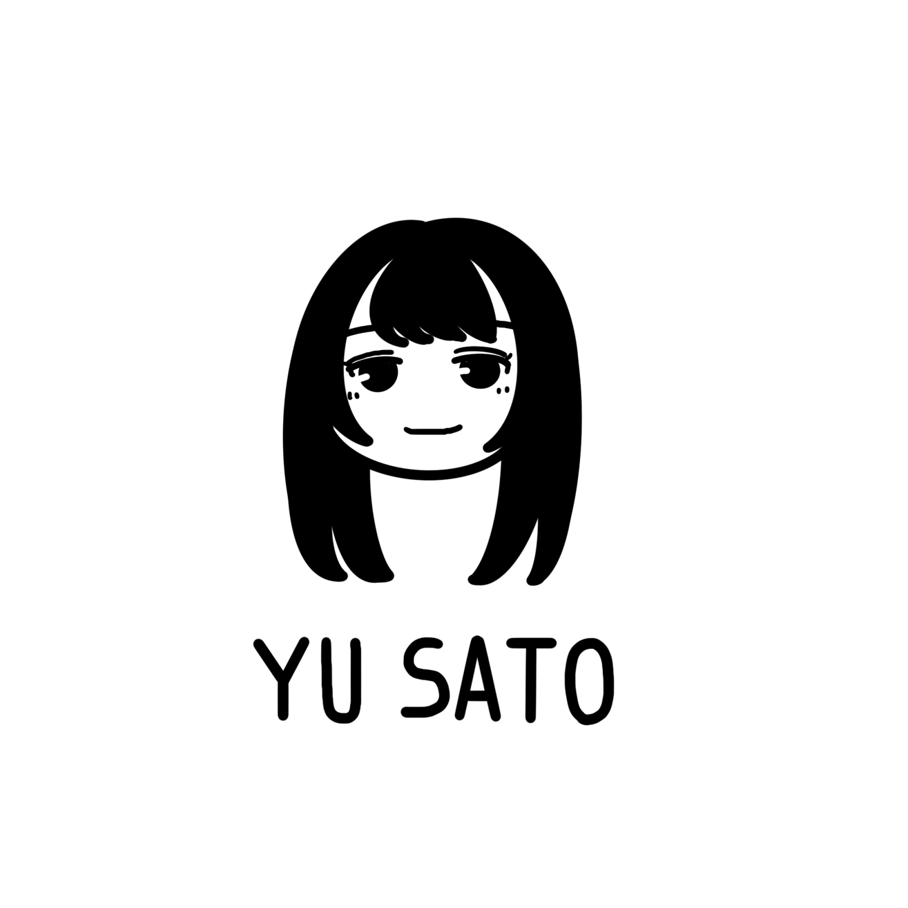

プロフィール
profile
- 漢字表記
- 佐藤 優羽
- 読み方
- さとう ゆう
- グループ
- 日向坂46
- 期生
- 五期生
- 生年月日
- 2006年9月10日
- 出身地
- 福岡県
- サイリウムカラー
- エメラルドグリーン × エメラルドグリーン
- 公式ブログ
- 佐藤 優羽 公式ブログ →
- 公式プロフィール
- 日向坂46公式サイト →
- お披露目サイトプロフィール
- 日向坂46 五期生 お披露目サイト →
関連ハッシュタグ
hashtags佐藤優羽さんを知りたいあなたへ！おすすめコンテンツ
editor's picks
お披露目ティザームービー
佐藤優羽さんお披露目ムービー！このティザー動画で一気に心を掴まれた方も多いのでは？

日向坂46「五期生ドキュメンタリー」〜6回目のひな誕祭への道のり〜
五期生加入からひな誕祭でおひさまにお披露目されるまでのドキュメンタリーです。初期の五期生の葛藤や努力が描かれていて必見です！

日向坂46『円周率』MUSIC VIDEO
佐藤優羽さん初センター曲！規律の厳しい学校にやってきたアンドロイドmodel-"U"が表情豊かな五期生に触れて変化していく様子や表情にご注目ください！

個人PV「ああゆう こうゆう さとうゆう」
17thシングル『Kind of love』TYPE-D収録。YouTubeでは予告編が公開されていますが、本編には「エンジェルさとうゆのみ～んなむざい！」も収録されていますので、ぜひ合わせてご覧ください！

【新参者】初の1日2公演！日向坂五期生の奮闘劇をお届けします【好きを超えろ】
全国ツアー直後に五期生10人で挑んだ「新参者」公演の舞台裏ドキュメンタリー！挑戦的なセットリストに苦労しながら取り組んでいく姿や、五期生との絆が深まっていく様子が描かれていて必見です！

日向坂になりましょう #22【私たちもボイトレで歌唱力を強化しましょう！】
日向坂になりましょうでボイトレに挑む佐藤優羽さん。「知らない声が出た！」と自分でも驚く歌声の変化は必見です！Lemino未加入の方は公式TikTokの切り抜き動画もご覧ください。
これまでの歩み
timeline初お披露目の「6回目のひな誕祭」から1年！サブタイトルのROCKESTRAを体現する生バンドで情熱的なパフォーマンスが披露されました！五期生楽曲「好きになるクレッシェンド」も初披露されました。
ひなた坂楽曲「君と生きる」を携えて行われたひなた坂LIVEは2日間全曲のセンターが入れ替わるという特別仕様！佐藤優羽さんは「君を覚えてない」、「ってか」の2曲でセンターポジションを担当しました。
全国ツアーと並行する過密日程の中、「好きを超えろ」をテーマに行われた「新参者」公演。五期生は2種類のセットリスト、全30曲を披露しました。佐藤優羽さんは「ガラス窓が汚れてる」でセンターポジションを担当しました。
「ヤなことぜんぶ、笑い飛ばせ」をキャッチコピーに全国6か所13公演行われた全国ツアー。地方公演の終演後には五期生によるお見送り会も行われました。
「新生日向坂」を掲げたライブで五期生は多くの楽曲に出演。佐藤優羽さんは三期生とともにユニット曲「パクチー ピーマン グリーンピース」にも参加しました。「パピグ」はユニゾンエアーにも収録されているので、気になる方はぜひチェック！